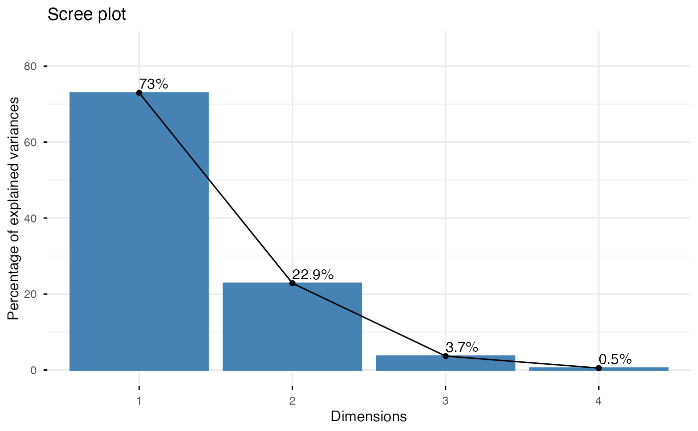
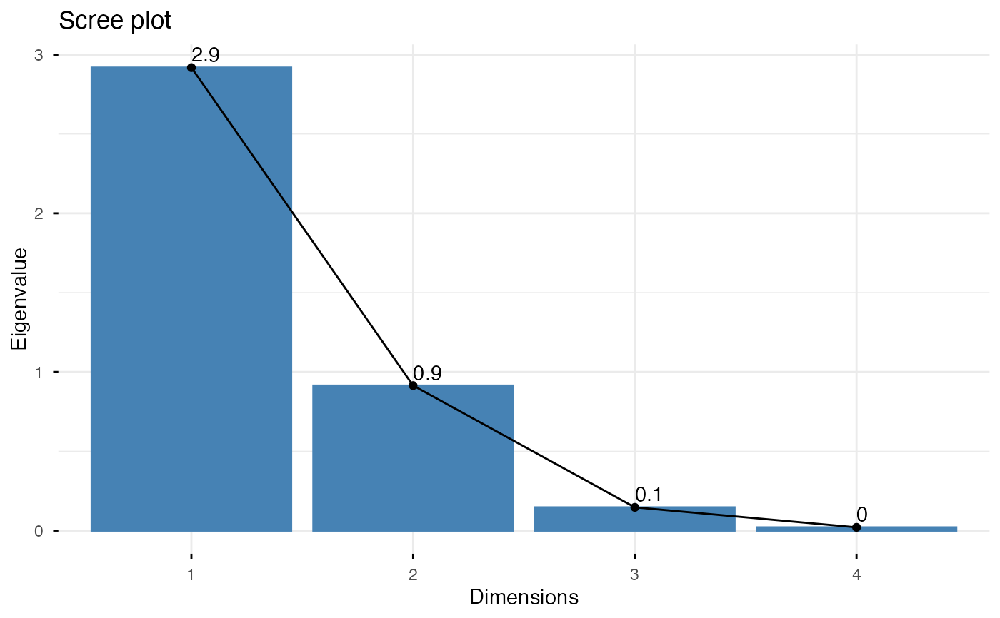
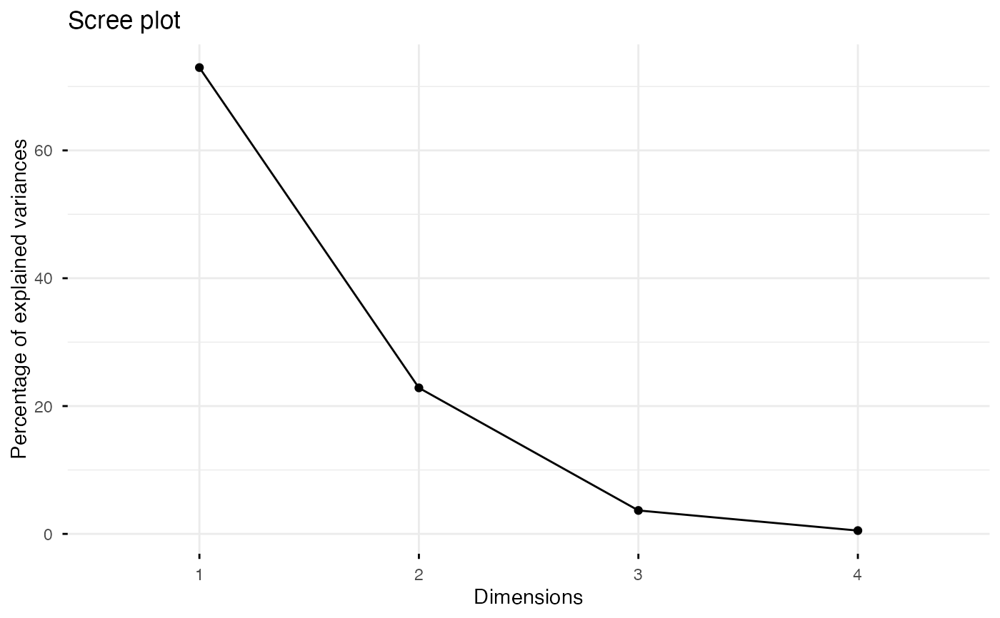

eigenvalue.RdEigenvalues correspond to the amount of the variation explained by each principal component (PC).
get_eig(): Extract the eigenvalues/variances of the principal dimensions
fviz_eig(): Plot the eigenvalues/variances against the number of dimensions
get_eigenvalue(): an alias of get_eig()
fviz_screeplot(): an alias of fviz_eig()
These functions support the results of Principal Component Analysis (PCA), Correspondence Analysis (CA), Multiple Correspondence Analysis (MCA), Factor Analysis of Mixed Data (FAMD), Multiple Factor Analysis (MFA) and Hierarchical Multiple Factor Analysis (HMFA) functions.
get_eig(X) get_eigenvalue(X) fviz_eig(X, choice = c("variance", "eigenvalue"), geom = c("bar", "line"), barfill = "steelblue", barcolor = "steelblue", linecolor = "black", ncp = 10, addlabels = FALSE, hjust = 0, main = NULL, xlab = NULL, ylab = NULL, ggtheme = theme_minimal(), ...) fviz_screeplot(...)
| X | an object of class PCA, CA, MCA, FAMD, MFA and HMFA [FactoMineR]; prcomp and princomp [stats]; dudi, pca, coa and acm [ade4]; ca and mjca [ca package]. |
|---|---|
| choice | a text specifying the data to be plotted. Allowed values are "variance" or "eigenvalue". |
| geom | a text specifying the geometry to be used for the graph. Allowed values are "bar" for barplot, "line" for lineplot or c("bar", "line") to use both types. |
| barfill | fill color for bar plot. |
| barcolor | outline color for bar plot. |
| linecolor | color for line plot (when geom contains "line"). |
| ncp | a numeric value specifying the number of dimensions to be shown. |
| addlabels | logical value. If TRUE, labels are added at the top of bars or points showing the information retained by each dimension. |
| hjust | horizontal adjustment of the labels. |
| main, xlab, ylab | plot main and axis titles. |
| ggtheme | function, ggplot2 theme name. Default value is theme_pubr(). Allowed values include ggplot2 official themes: theme_gray(), theme_bw(), theme_minimal(), theme_classic(), theme_void(), .... |
| ... | optional arguments to be passed to the function ggpar. |
get_eig() (or get_eigenvalue()): returns a data.frame containing 3 columns: the eigenvalues, the percentage of variance and the cumulative percentage of variance retained by each dimension.
fviz_eig() (or fviz_screeplot()): returns a ggplot2
http://www.sthda.com/english/
# Principal Component Analysis # ++++++++++++++++++++++++++ data(iris) res.pca <- prcomp(iris[, -5], scale = TRUE) # Extract eigenvalues/variances get_eig(res.pca)#> eigenvalue variance.percent cumulative.variance.percent #> Dim.1 2.91849782 72.9624454 72.96245 #> Dim.2 0.91403047 22.8507618 95.81321 #> Dim.3 0.14675688 3.6689219 99.48213 #> Dim.4 0.02071484 0.5178709 100.00000# Scree plot - Eigenvalues fviz_eig(res.pca, choice = "eigenvalue", addlabels=TRUE)# Use only bar or line plot: geom = "bar" or geom = "line" fviz_eig(res.pca, geom="line")if (FALSE) { # Correspondence Analysis # +++++++++++++++++++++++++++++++++ library(FactoMineR) data(housetasks) res.ca <- CA(housetasks, graph = FALSE) get_eig(res.ca) fviz_eig(res.ca, linecolor = "#FC4E07", barcolor = "#00AFBB", barfill = "#00AFBB") # Multiple Correspondence Analysis # +++++++++++++++++++++++++++++++++ library(FactoMineR) data(poison) res.mca <- MCA(poison, quanti.sup = 1:2, quali.sup = 3:4, graph=FALSE) get_eig(res.mca) fviz_eig(res.mca, linecolor = "#FC4E07", barcolor = "#2E9FDF", barfill = "#2E9FDF") }